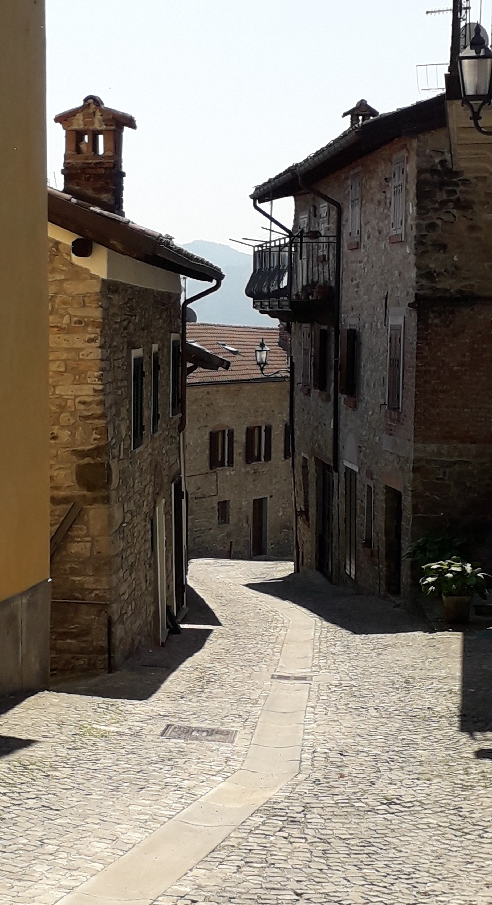
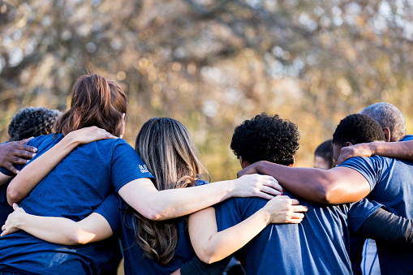

Già dal 1.600 i continui smottamenti del terreno nella zona avevano costretto a spostare più volte l’ubicazione degli insediamenti limitrofi, ma Borgo Castello Alto era sopravvissuto indenne. Nel territorio carsico, però, l’acqua domina il sottosuolo, causando frequenti frane, finché, nel 1912, una di queste colpisce il paese e, benché non causi vittime, gli abitanti decidono di abbandonare progressivamente le loro case per trasferirsi in zone più sicure. Dopo anni di abbandono, recentemente Borgo Castello Alto è stato messo al sicuro e valorizzato per aprirsi a nuove forme di turismo.
Sono molti i visitatori che ogni anno visitano il Borgo con le guide dell'omonima associazione.

Visita il borgo.L'associazione di volontari Borgo Castello Alto è nata nel 2015 con l'obiettivo di salvaguardare Borgo Castello Alto e organizzare attività turistiche.
Vieni a trovarci in sede. Se hai meno di 16 anni vieni con i tuoi genitori.

"Associazione Borgo Castello Alto"
Strada Borgo, 5 - Borgo Castello Alto
e-mail: info@borgocastelloalto.it
telefono: +393335551888